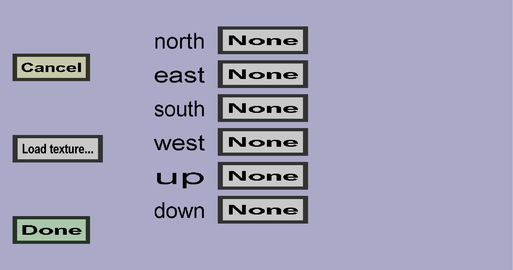

The sided block model menu can be used to create a block model with a different texture on each side of the block. It should look like this:
You need to select a texture for each side of the block (north, east, south, west, up, and down). If the textures are not yet in your list of textures, you can use the Load texture... button to select it on-the-fly. Click Done once you have selected each texture.